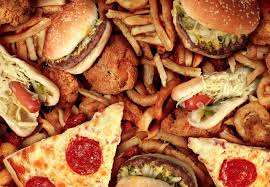
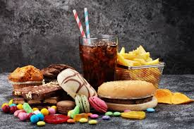
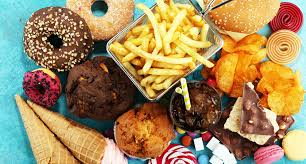

Conhecendo os aimentos: d natural aos industrializados
Os alimentos ultraprocessados são produtos feitos pela indústria com muitos ingredientes artificiais, como corantes, conservantes, açúcar, gordura e aromatizantes. Eles passam por várias etapas de fabricação e geralmente têm pouco valor nutritivo. Exemplos são refrigerante, salgadinho, biscoito recheado, macarrão instantâneo e nuggets. O consumo excessivo desses alimentos pode causar problemas de saúde, por isso devem ser evitados.


